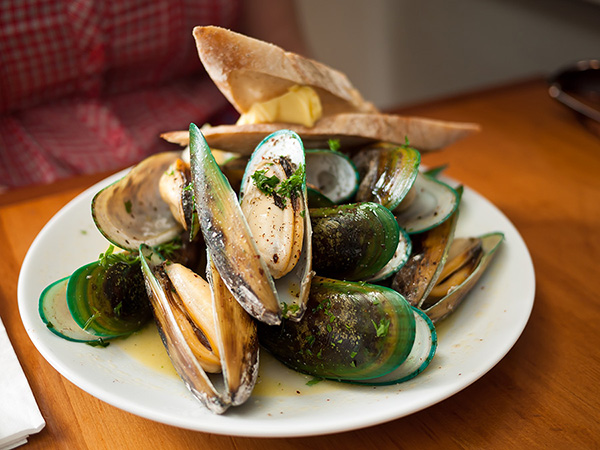
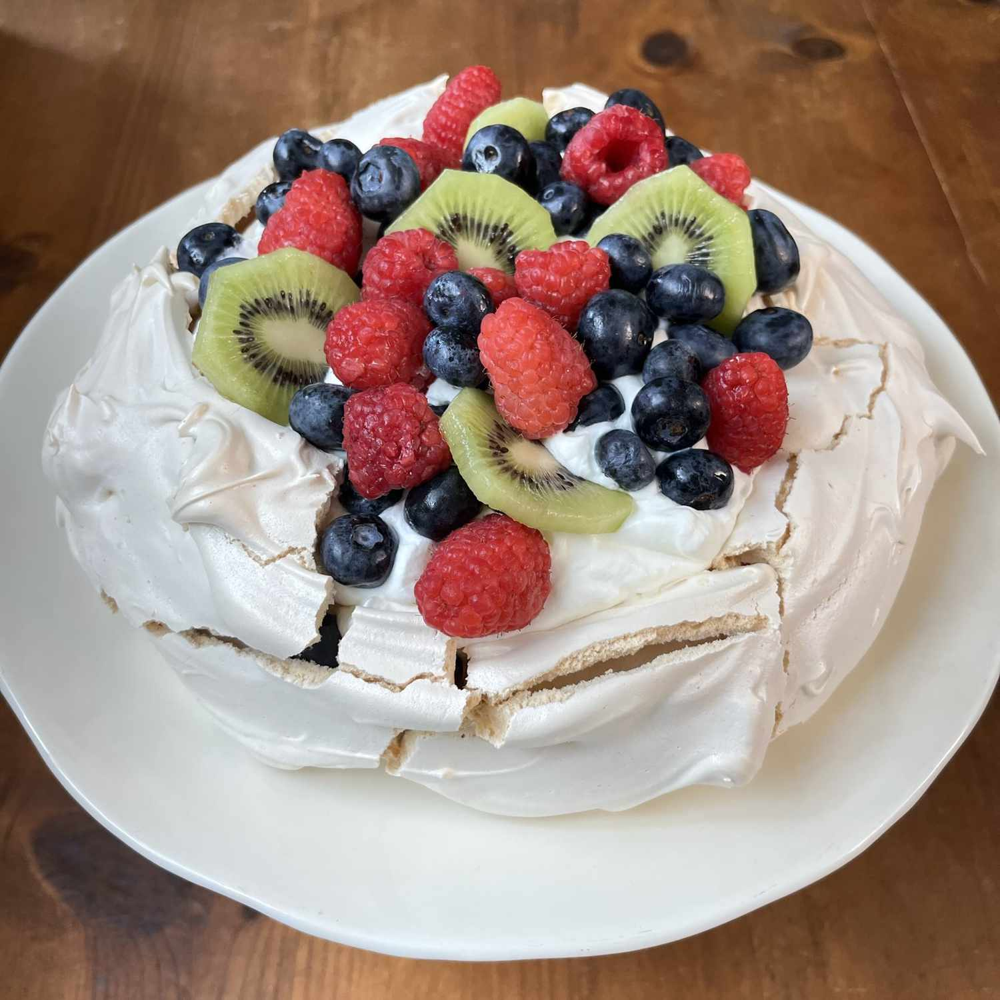
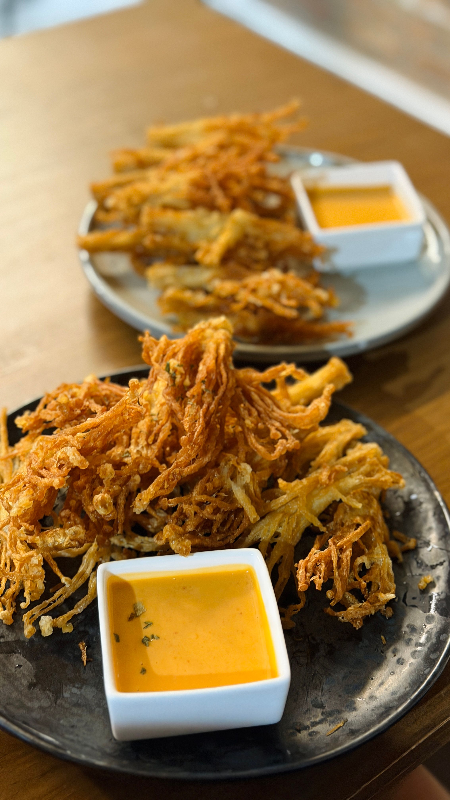
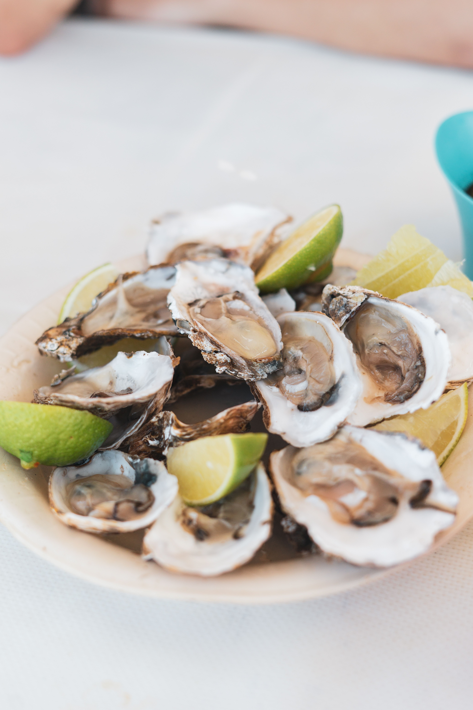
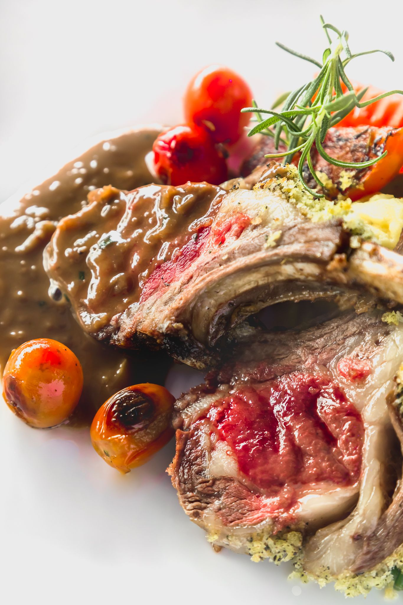

Food

Green-lipped Mussels
A New Zealand native, these large green-shelled mussels are usually steamed and served simply with garlic butter or a white wine broth — a must-try for seafood lovers.

Pavlova
A light meringue dessert with a crisp shell and soft marshmallow-like center, topped with whipped cream and fresh fruit like kiwifruit and passionfruit. A staple at Kiwi celebrations.

Whitebait Fritter
Tiny, translucent whitebait fish bound in a light egg batter and pan-fried until golden. A seasonal delicacy, often served with lemon on fresh bread.

Bluff Oysters
Prized wild oysters harvested from the cold waters near Bluff, at the southern tip of the South Island — briny, plump, and best eaten fresh and raw.

Lamb
New Zealand lamb is famously tender, grass-fed, and served everywhere from roadside cafés to fine dining — roasted, grilled, or slow-cooked with herbs.

Fish & Chips
A beloved Kiwi classic — fresh local fish deep-fried in a crisp batter, served with thick-cut chips, best eaten straight from the paper by the seaside.